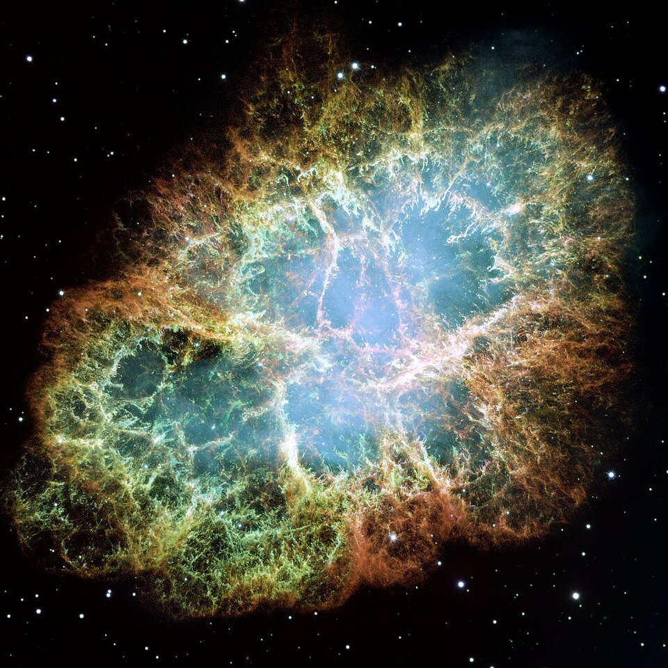

Un fluido pesado encima de uno liviano: dedos que bajan y burbujas que suben
Llená un vaso con agua, tapalo con una hoja de cartón, dalo vuelta con cuidado y sacá el cartón despacio. El agua, que ahora está arriba del aire, no se queda: se cae. No porque el agua no pueda flotar sobre el aire en teoría, sino porque esa situación es inestable: cualquier ondulación chica de la superficie crece. Es la inestabilidad de Rayleigh-Taylor, la de un fluido pesado apoyado sobre uno liviano.
David Tong, de la Universidad de Cambridge, plantea el caso: dos fluidos quietos, el más pesado arriba [1]. No sorprende que sea inestable, dice; lo interesante es cómo hace el fluido pesado para pasar a través del liviano, si no se mezclan y no pueden simplemente intercambiar lugares [1]. La respuesta es que la superficie entre los dos se ondula: en algunos lugares el fluido pesado empieza a bajar como dedos, y en otros el liviano sube como burbujas. Cuanto más se ondula, más se desequilibran las fuerzas, y la ondulación crece cada vez más rápido.
Tong obtiene la inestabilidad como un caso particular de la de Kelvin-Helmholtz, con los dos fluidos quietos y el de arriba más denso [1]. La tensión superficial entre los dos fluidos se resiste a las ondulaciones cortas, porque curvarlas mucho le cuesta energía. Por eso solo crecen las ondulaciones largas [1]:
Entre las que crecen, hay una que crece más rápido que todas: Tong la encuentra con 3k² = 1/ℓc², donde ℓc es una generalización de la longitud capilar [1]. Esa ondulación fija el tamaño de los dedos con que el fluido de arriba se mete en el de abajo [1].
La pirámide de gente: una pila de personas paradas sobre los hombros de otras es posible, pero inestable: si alguien de arriba se inclina un poco, el peso se corre hacia ese lado, el de abajo no aguanta, y la inclinación crece. Un fluido pesado sobre uno liviano es igual: está en equilibrio, pero cualquier ondulación chica se amplifica sola.
El aporte de Taylor, según Tong, fue usar el principio de equivalencia: las matemáticas son las mismas si en lugar de la gravedad hay una aceleración, es decir, si un fluido pesado es acelerado contra uno liviano [1]. Ese caso, dice Tong, es en realidad más común, y la inestabilidad de Rayleigh-Taylor describe, entre otras cosas, las nubes en forma de hongo de las erupciones volcánicas y de las explosiones nucleares [1].

Cuando se vierte con cuidado un jarabe denso sobre agua, a veces se ven dedos que bajan desde la superficie: es la misma inestabilidad, con un fluido más denso arriba (un razonamiento a partir de la descripción de Tong). Lo mismo pasa con el agua del vaso dado vuelta. La diferencia con la experiencia del cartón es que, mientras el cartón está, impide que la superficie se ondule.
Una familia de inestabilidades: Rayleigh-Taylor es pariente cercana de la inestabilidad de Kelvin-Helmholtz, la de dos capas que se deslizan, y de la convección de Rayleigh-Bénard, donde el fluido de abajo se vuelve más liviano porque se calienta [1].
Un fluido pesado sobre uno liviano está en equilibrio, pero no en equilibrio estable: cualquier ondulación de la superficie crece, y el fluido pesado baja en dedos mientras el liviano sube en burbujas. La tensión superficial frena las ondulaciones cortas y elige el tamaño de los dedos. Y como la gravedad se puede reemplazar por una aceleración, la misma física explica el hongo de una explosión.
Pregunta para la comunidad: Según la condición de Tong, si dos líquidos tienen densidades casi iguales, ¿las ondulaciones que crecen son más largas o más cortas que si la diferencia de densidad fuera grande? ¿Y si la tensión superficial entre ellos aumenta?